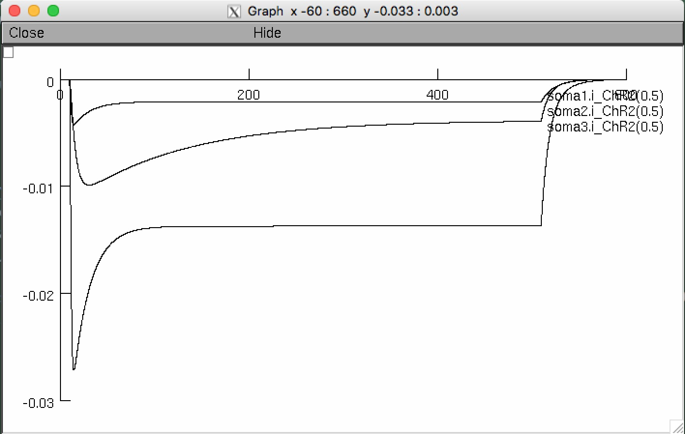

This is a NEURON simulator version of the model in
Williams JC, Xu J, Lu Z, Klimas A, Chen X, Ambrosi CM, Cohen IS, Entcheva E (2013) Computational optogenetics: empirically-derived voltage- and light-sensitive channelrhodopsin-2 model. PLoS Comput Biol 9:e1003220
http://dx.doi.org/10.1371/journal.pcbi.1003220
This code was contributed by Michele Giugliano [mgiugliano at gmail.com].
To run compile the mod files and start with the mosinit.hoc. If you need
more help running the model please read this:
https://senselab.med.yale.edu/ModelDB/NEURON_DwnldGuide.cshtml
After the simulation starts you should see a graph similar to Figure 2B in the paper:
